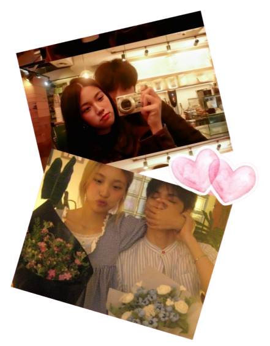
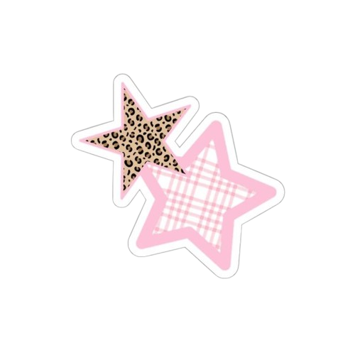
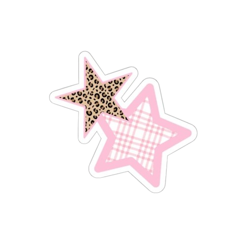

dimana pun kamu berada, aku bakalan tetep sayang dan selalu cinta kamu. aku bangga sama kamu hari ini, even kamu ga melakukan hal keren. bagi aku, kamu selalu keren. pacarku, cantiku selalu sempurna dimata aku dan aku harap kamu ga pernah ragu sama perasaan ini. aku selalu ada untuk kamu, lari ke aku kalo kamu ga baik baik aja, jangan pernah ngerasa sendirian, dan jika kamu ragu untuk melakukan sesuatu, tolong liat aku dibelakang kamu ya, aku selalu siap untuk kamu repotkan. kuteguk segala badai dan ombakmu tanpa menawar asin juga perihnya. saat kamu runtuh, aku memilih menjadi tanah: alas yang sabar, menampung jatuh hingga tumbuh


sejak mengenalmu, dunia terasa lebih berwarna, dan kecantikanmu adalah lukisan nyata yang tak pernah selesai. jika aku seorang pelukis, maka hatimu adalah kanvas terindah yang ingin kuhiasi dengan warna warna cinta.
terimakasih ya, sayang? karna udah peluk raga kecilku yang aneh, childish, ribet, bawel, suka bikin kamu ngambek, im beyond thankful. kadang aku mikir, how did i get this lucky? bisa dicintai seseorang kaya kamu. no matter how messy or loud i can be, u r the one i always wanna run to. jika kamu adalah hujan badai yang penuh gemuruh, aku adalah yang tidak memilih berteduh


 

kamu adalah sebuah puisi yang sangat cantik dan menawan, diksi yang terjalin menuju kamu adalah rangkuman indahnya kehadiranmu.
tuhan tidak menciptakan manusia dengan terlihat sempurna di mata manusia, kamu tetaplah definisi keindahan yang selalu aku ciptakan dalam bentuk tulisan syukur, dan kamu akan selalu aman bahkan abadi. namamu aku rayakan bersama amin paling serius dalam balutan kalimat yang aku tujukan untuk kebahagiaanmu. semua tentangmu ingin kurekam indahnya, aku suka semua yang ada dalam dirimu dan banyak hal yang harus dunia tau bahwa dirimu unik dan begitu ajaib dimataku. dan pada kemungkinan ini, aku memilih untuk mencintaimu, membanjiri sekat hatimu dengan ombak kasihku


semoga gemaya selalu tersenyum di setiap harinya, dan aku harap banyak kebahagiaan datang untuknya. doaku selalu sama, semoga cintaku selalu tersenyum dengan senyuman manisnya itu. logika pun dibuat tak berdaya oleh senyumnya yang sederhana. bahkan, bumi pun lupa cara berotasi ketika senyummu berseri. selagi cintaku tersenyum, berarti hari hariku akan terus berwarna